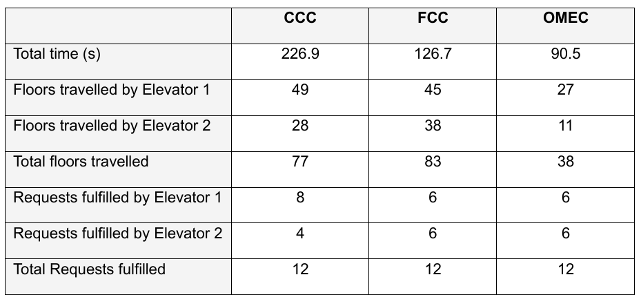
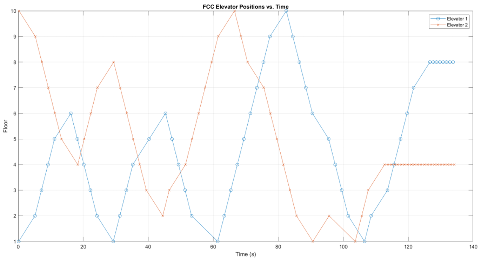
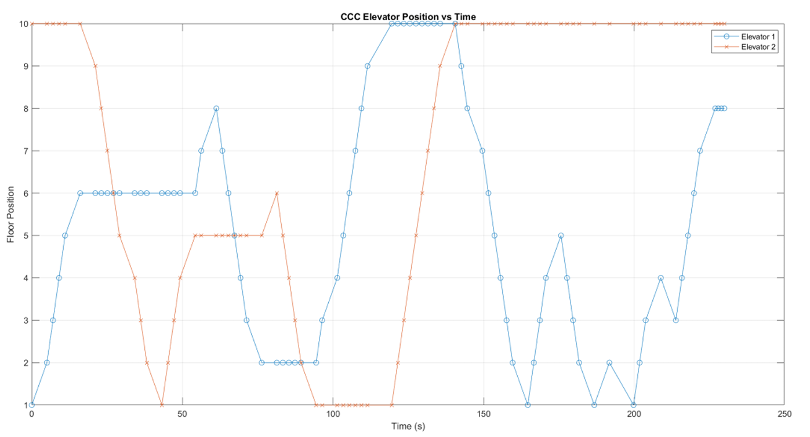
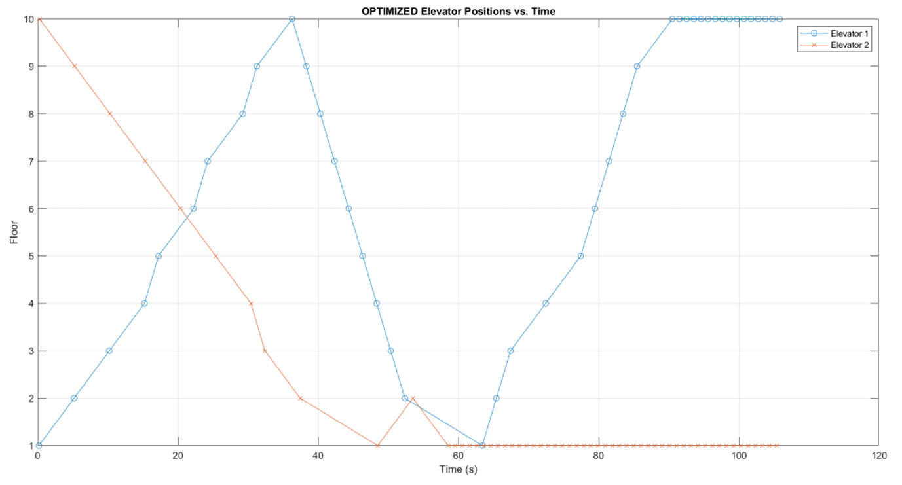

Three dispatch strategies for a two-elevator building, implemented and compared in MATLAB.
The main objective of this project is to design, implement, and compare multiple control strategies for the operation and coordination of two elevators in a multi-floor building. The elevator control algorithms aim to reduce total service time, minimize energy use, and ensure balanced request handling between elevators. The complete scope of the project was carried out using MATLAB.
parfeval for asynchronous task executionThe analysis in performance of the different elevator control strategies implemented was carried out in a 12-request simulation that was given at the same time to all the controllers. At the beginning of the simulation, the elevator 1 is idle on the first floor and the elevator 2 is also idle on the top floor. The elevator speed is set to 2 seconds between floors and the pause to pick up or drop off a client is 3 seconds long.




The results indicate that the Optimized Multi-Elevator Controller (OMEC) outperforms both the First Call Controller (FCC) and the Closest Call Controller (CCC) in terms of average wait time and overall efficiency. The intelligent grouping and parallel operation strategies employed by OMEC significantly reduce service times and balance workloads between elevators.